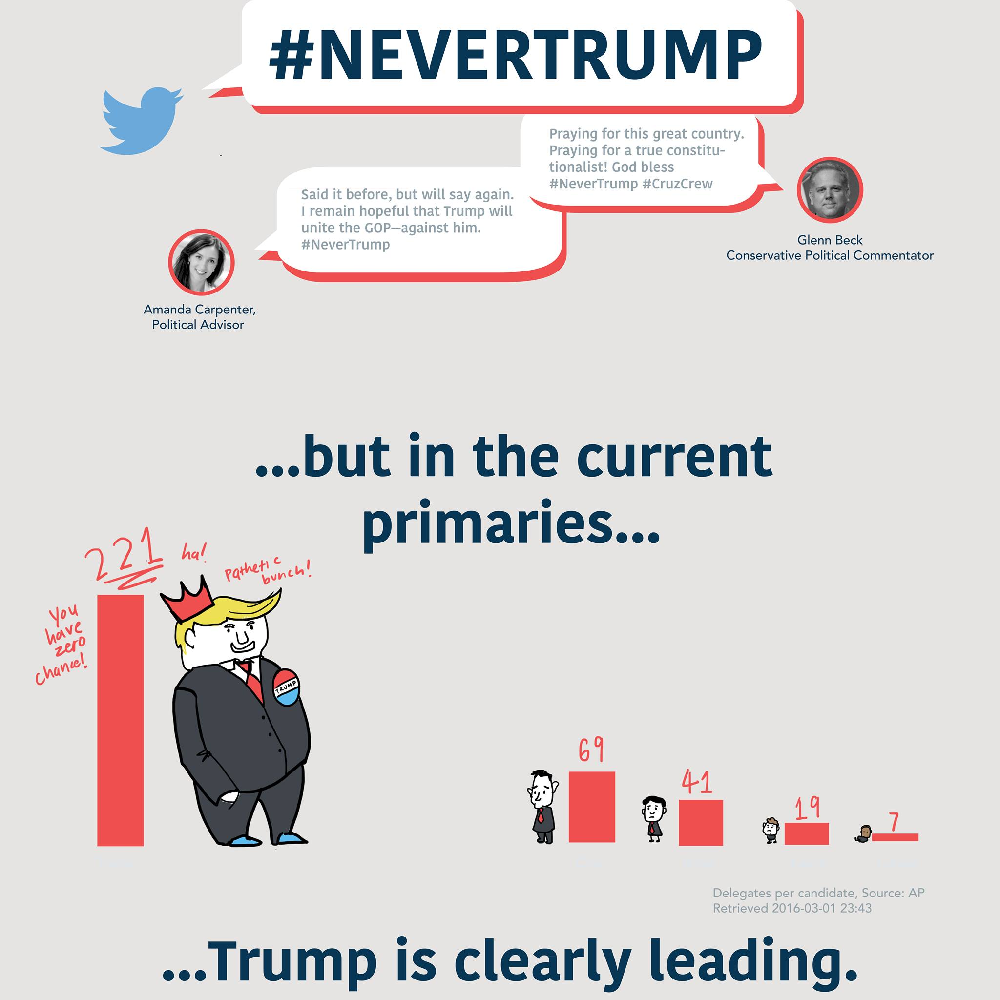

#NeverTrump: The Candidates Are on Board, but What About the SuperPACs?
For the past several months, the Republican establishment has been virtually unanimous in its opposition of Donald Trump's campaign.

Thus, it is reasonable to assume that SuperPACs that support candidates other than Trump are focusing their attack ads on him. However, the data suggests another story. Mouse over the candidate's picture to show who their supporting superPACs are attacking.
Attack Ads Among Candidates
Total Airings of Attack Ads: 4,476,755
Data taken from Political TV Ad Archive in February 2016
SuperPACs and Number of Ad Airings, By Supported Candidate:
Ted Cruz: Stand For Truth (1,200,333 against Rubio), Keep the Promise I (32,768 against Trump, 38,635 against Rubio), Club for Growth Action (221,841 against Trump, split with Rubio)
Donald Trump: none
Jeb Bush: Right to Rise USA (9,604 against Trump, 404,482 against Kasich, 2,428,147 against Rubio)
Ben Carson: none
Marco Rubio: Conservative Solutions PAC (3,872 against Trump, 106,625 against Bush), Club for Growth Action (221,841 against Trump, split with Cruz)
John Kasich: New Day for America (243 against Trump)
If #NeverTrump is the goal, you wouldn't know it by looking at the SuperPACs.